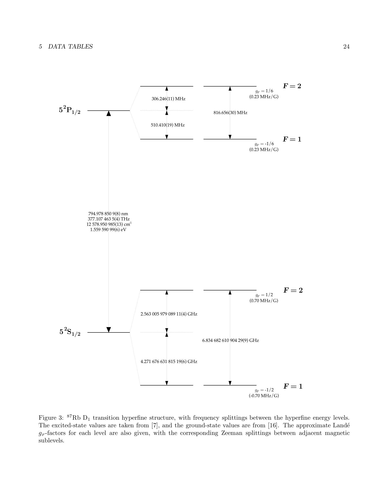
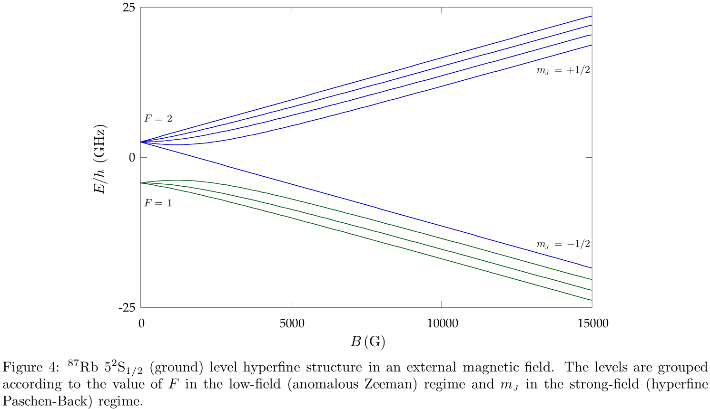
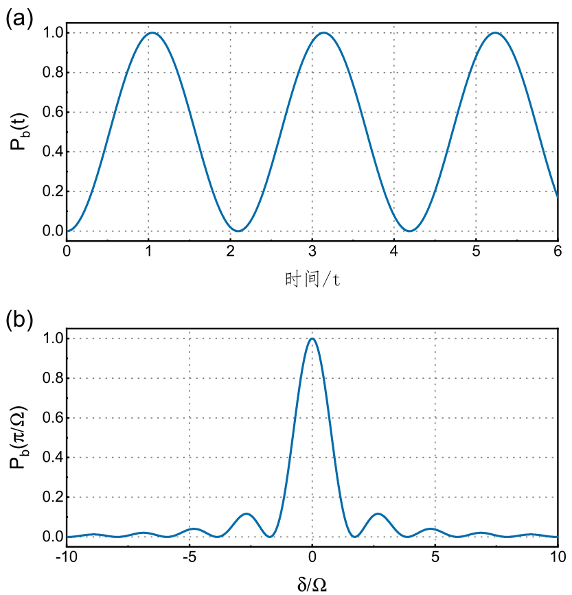
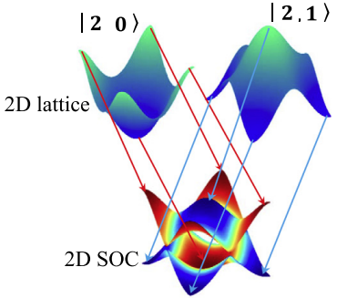
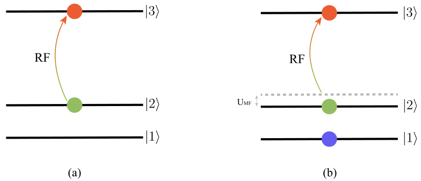

Cold Atom: 射频谱学 学习笔记
射频谱学是探测原子气体的一种强大工具，它允许我们以可控的方式向原 子转移能量。通过施加特定频率的振荡电磁场（射频场），我们可以选择性地激发气体中的原子到更高的能级。射频场频率通常在 MHz 至 GHz 范围内，在更高频率下我们一般称其为微波场，这两者没有本质的区别，都对应于不同原子态之间的能级间隔。
射频光谱学的历史可以追溯到二十世纪二三十年代，人们开始研究原子气体的光谱。当时，研究原子光谱的主要工具是光学光谱学，观察原子对光的吸收和发射。然而，光学光谱学在研究磁场中的原子时受到了限制。到了二十世纪四五十年代，研究人员开始将射频光谱学作为光学光谱学的补充工具。实验发现通过在磁场中的原子气体中施加射频场，可以诱导不同原子态之间的跃迁，这使人们能够研究磁场中原子光谱的详细结构。在接下来的几十年中，射频谱技术被广泛地应用于研究磁共振、超精细结构和塞曼分裂等现象。本节中我将介绍超冷原子物理中射频的工作原理、射频谱技术的实验应用。
原子光谱
在冷原子系统中，尤其是在量子模拟中，常常使用相近的几个超精细结构的能级。
|   |
|---|
| \(^{87}Rb\) 原子的能级，以及在磁场情况下的超精细结构。这两张图片摘录自[1]. |
射频：3 kHz 至 300 GHz
微波：波长介于红外线和无线电波，频率范围大约在 300MHz 至300GHz.
这两者并没有本质的区别 射频特点：射频光谱学的一个显著特点是：射频场的波长远大于系统中的其他特征长度尺度。具体来说，射频波长通常比原子云的尺寸大得多。这一特性带来了两个关键影响：
动量可忽略
与系统的典型动量尺度（如费米动量）相比，射频场所对应的动量几乎可以忽略不计。
均匀耦合
由于射频波长远大于原子云，其强度在原子云尺度上可视为均匀分布。因此，耦合参数可以简化为一个常数： \[ \Omega(r) = \Omega \exp(i k {\bf L} \cdot {\bf r}) = \Omega \]
这意味着，在粒子从基态（g）跃迁到激发态（e）的过程中，动量守恒直接体现在初态和末态的动量关系上，而无需额外考虑射频场带来的动量变化。 这种均匀耦合的特性使得理论分析更加简洁，同时也为实验调控提供了便利。
无相互作用情况（拉比震荡）
|  |
|---|
| (a) 拉比震荡示意图。(b) 固定时间\(\pi/\Omega\)下，原子处于激发态的概率与失谐的关系。From the paper[1]. |
\(t\) 时刻原子处于激发态的概率为： \[ P_b(t)=\frac{N_b}{N_a+N_b}=\frac{\Omega^2}{\Omega^2+\delta^2}\sin^2(\frac{\sqrt{\Omega^2+\delta^2}}{2}t). \] 当射频频率不完全共振时，在 \(\Omega t=\pi\) 时原子处于 \(|b\rangle\) 态的概率与射频失谐的关系见图1(b)。
真实实验
|  |
|---|
| From paper [2] |
下面两个能带是 \(|1,-1\rangle\) 和 \(|1,-0\rangle\),
相互作用情况
Mean-Field cases
这个例子来自于2003年的一篇Science文章，这是首次在实验中用于研究强相互作用费米气体平均场能量的方法。
处于 \(|2\rangle\) 态的原子会受到 \(|1\rangle\) 态原子的影响而产生能量偏移\([(4\pi\hbar^2)/(m)]n_1a_{12}\)。其中 \(\hbar\) 是普朗克常数 \(h\) 除以 \(2\pi\)，\(m\) 是原子质量，\(n_1\) 是 \(|1\rangle\) 态原子的密度，\(a_{12}\) 是 \(|1\rangle\) 态和 \(|2\rangle\) 态之间的散射长度。
对于一个密度为 \(n\) 的系统，我们比较纯 \(|1\rangle\) 态气体与将一个原子转移到\(|2\rangle\) 态后的气体能量。其能量差为 \(h\nu_{12}+[(4\pi\hbar^{2})/(m)]na_{12}\)，其中 \(\nu_{12}\) 是无相互作用系统的共振频率。
如图 (6.2) 所示， \(|1\rangle\) 、 \(|2\rangle\) 是具有相互作用的两个能态， \(|3\rangle\) 是探测态，其对应 \(|2\rangle\) 原子射频跃迁后的状态。实验上测量了从单 \(|2\rangle\) 态到 \(|3\rangle\) 态的射频共振频率和 \(|1\rangle|2\rangle\) 混态中从 \(|2\rangle\) 态到 \(|3\rangle\) 态的射频共振频率之差。 \[ \Delta\nu=\frac{2\hbar}{m}n_{1}(a_{12}-a_{23}). \] 这里 \(a_{12}\) 和 \(a_{23}\) 分别是各态之间的散射长度。当 \(a_{23}\) 趋近于零时，我们测得的便是 \(|1\rangle - |2\rangle\) 之间的相互作用强度。这种平均场位移在原子钟实验中被称为“时钟漂移”, 是其实验系统误差的主要来源之一。
|  |
|---|
| From paper [3]. |